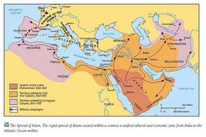

Cuốn Lịch sử văn minh Ả Rập, cũng như các cuốn Lịch sử văn minh Ấn Độ, Lịch sử văn minh Trung Hoa…, cụ Nguyễn Hiến Lê cũng dịch từ bản Pháp dịch của nhà Rencontre ở Lausanne, Thuỵ Sĩ. Nguyên tác tiếng Anh là Cuốn II: Islamic Civilization: 569-1258 (Văn minh Hồi giáo: 569-1258) trong Tập IV: Age of Faith[1] (Thời Trung Cổ) trong bộ The Story of Civilization (Lịch sử văn minh) của Will Durant.
Năm 569 là năm nhà tiên tri Mohomet, người khai sáng đạo Hồi, chào đời; năm 1258 là năm quân Mông Cổ cướp phá kinh đô Bagdad, chấm dứt triều đại Abbaside.
Mahomet và các người nối nghiệp chinh phục trọn bán đảo Ả Rập, sau đó “chiếm được một nửa những nước ở châu Á thuộc về đế quốc Byzantin[2], trọn Ba Tư và Ai Cập, một phần lớn Bắc Phi”, phần lớn bán đảo Iberan[3]; dựng nên một đế quốc Hồi giáo rộng mênh mông, trãi dài từ Đại Tây Dương tới sông Indus gồm các miền Tây Á, Trung Á, Bắc Phi, một phần Tây Nam châu Âu (xem bản đồ bên dưới). Sau năm 750, tuy người Hồi giáo còn chiếm thêm đảo Corse, đảo Sardaigne, đảo Sicile, nhưng chính quyền trung ương lần lần suy yếu, nhiều lãnh chúa là người Ả Rập, hoặc người Ba Tư, người Thổ Nhĩ Kỳ, người Berbère…, mỗi nhà hùng cứ một phương, đế quốc Hồi giáo bị chia cắt thành nhiều vương quốc độc lập. Năm 1258, vị calife (vừa là vua vừa là giáo chủ Hồi giáo) cuối cùng của triều đại Abbaside bị quân Mông Cổ giết, nhưng triều đại Mameluk hùng mạnh ở Ai Cập vẫn còn. Năm 1260 quân Mamelut tiêu diệt một đạo quân Mông Cổ Ain-Jalut, và “năm 1303, một trận quyết định ở gần Damas chấm dứt sự xâm lăng của Mông Cổ và cứu được Syrie cho Hồi giáo, có lẽ cả châu Âu cho Kitô giáo nữa”; các lãnh chúa Mamelut cũng cứu “xứ Palestine khỏi bị quân France xâm chiếm, và khi họ đuổi được chiến sĩ Kitô[4] giáo cuối cùng ra khỏi châu Á”; triều đại Mamelut còn kéo dài “cho tới khi người Thổ Ottman diệt năm 1517”.

Sự bành trướng của đế quốc Hồi giáo
(http://www.conservapedia.com/images/thumb/1/16/Islam750.jpg/590px-Islam750.jpg)
Nền văn minh Hồi giáo được tác giả nêu ra trong cuốn này là nền văn minh các dân tộc theo Hồi giáo từ năm 569 đến năm 1258 (trước và sau khoảng thời gian đó, tác giả chỉ nêu khái quát). Theo tác giả thì “Gần như Kitô giáo chỉ ảnh hưởng tới Hồi giáo ở phương diện tôn giáo và chiến tranh… Ngược lại, ảnh hưởng của Hồi giáo tới Kitô giáo vừa đa diện vừa lớn lao vô cùng. Châu Âu theo Kitô giáo học được của Hồi giáo nhiều món ăn, thức uống, thuốc trị bệnh, áo giáp, huy chương, các kiểu và ý kiến về nghệ thuật, kĩ thuật thương mại, kĩ nghệ, luật và phương pháp hàng hải… Thơ ngụ ngôn và những chữ số Ấn Độ cũng khoát một hình thức Ả Rập trước khi vô châu Âu. Khoa học Hồi giáo duy trì và mạnh mẽ khai triển thêm môn toán, lý, hoá, thiên văn, y học của Hy Lạp để sau truyền lại cho châu Âu… Y học Hồi giáo đứng đầu thế giới trong năm trăm năm. Triết học Hồi giáo sửa đổi triết thuyết của Aristote để truyền lại cho châu Âu theo Kitô giáo, Avicenne và Averroès là những ngôi sao sáng ở phương Đông soi đường cho các nhà thần học phái kinh viện châu Âu, và được các nhà này coi là những bậc thầy ngang hàng với các triết gia Hy Lạp thời cổ… Một phần văn minh rực rỡ ấy là di sản của Hy Lạp; nhưng một phần lớn, nhất là về chính trị, thi ca và nghệ thuật là riêng của dân tộc Ả Rập và nó quí vô cùng”. Không chỉ riêng dân tộc Ả Rập mà các dân tộc khác trong đế quốc Hồi giáo cũng đóng góp một phần đáng kể vào nền minh Hồi giáo, đặc biệt là dân tộc Ba Tư. Ngoài “ngôi sao sáng ở phương Đông” Avicenne là người Ba Tư kể trên, còn có thi hào Omar Khayyam, nhà bác học al-Biruni, nhà toán học Al-Khwarizmi (tác giả cuốn “Đại số học”)…, và tác phẩm được nhiều người biết đến, cuốn “Ngàn lẻ một đêm”, cũng của người Ba Tư.
Tuy nền văn minh Hồi giáo thời Trung cổ là do nhiều dân tộc theo Hồi giáo đóng góp, ba trung tâm văn hoá nổi tiếng nhất là Le Caire ở Ai Cập, Bagdad ở Mésopotamie và Cordoue ở Tây Ban Nha, còn xứ Ả Rập, nơi khai sinh của Hồi giáo, từ năm 762, năm al-Mansur dời đô từ Médine đến Bagdad, không còn là trung tâm của đế quốc Hồi giáo nữa, nhưng nền văn minh trên những xứ bị dân tộc Ả Rập chinh phục đó cũng được xem là nền văn minh Ả Rập, và đế quốc Hồi giáo cũng được gọi là đế quốc Ả Rập. Hai cụm từ “văn minh Ả Rập” và “đế quốc Ả Rập”[5], trước khi dịch cuốn Lịch sử văn minh Ả Rập, cụ Nguyễn Hiến Lê đã dùng trong cuốn Bán đảo Ả Rập xuất bản năm 1969.
*
Theo Danh mục sách của Nguyễn Hiến Lê trong cuốn Mười câu chuyện văn chương thì cuốn Lịch sử văn minh Ả Rập do nhà Phục Hưng xuất bản lần đầu vào năm 1975. Ở đây tôi chép theo bản in của nhà Văn hóa Thông tin, xuất bản Quí I năm 2006[6]. Trong quá trình chép lại, tôi tham khảo cuốn Islamic Civilization: 569-1258 nêu trên để sửa những chỗ in sai và chú thích, nếu như thấy cần thiết. Có nhiều đoạn sách in thiếu, tôi phải dịch các đoạn tương ứng trong nguyên tác tiếng Anh (về sau gọi là bản tiếng Anh) để bổ sung, trong số các đoạn dịch bổ sung đó có vài đoạn tôi phải nhờ đến sự trợ giúp của Quocsan. Bạn Quocsan còn tách cuốn Islamic Civilization: 569-1258 trong tập Age of Faith cho vào cuối ebook. Ngoài ra, bạn Vvn cũng giúp tôi biết thêm về âm lịch Hồi giáo. Xin chân thành cảm ơn hai bạn.
Goldfish
[1] Các bạn có thể tải bản PDF của tập này từ trang http://rapidshare.com/#!download|164dt|61302416|THE_STORY_OF_CIVILIZATION_04.pdf|5617. Book II: Islamic Civilization: 569-1258 từ trang 196 đến trang 443 (không kể các chú thích).
[2] Còn gọi là đế quốc Byzance (trong tiết I, chương I, cụ Nguyễn Hiến Lê dùng từ Byzantin, nhưng sau đó cụ dùng từ Byzance). Kinh đô của đế quốc này là Constantinople.
[3] Nay gồm Bồ Đào Nha, Tây Ban Nha (Y Pha Nho), Andora, Gibraltar thuộc Anh, và một khu vực rất nhỏ của Pháp.
[4] Các chiến sĩ Kitô giáo này đều thêu hình thập tự trên trang phục nên được gọi là Thập tự quân.
[5] Hai cụm từ này cũng được dùng trong giáo án Lịch sử văn minh thế giới của Đoàn Trung, Trường Đại học An Giang, 2009.
[6] Quí I năm 2006, nhà Văn hoá Thông tin xuất bản bộ Lịch sử văn minh phương Đông gồm ba cuốn: Lịch sử văn minh Ả Rập, Lịch sử văn minh Ấn Độ, Lịch sử văn minh Trung Hoa. Tôi mua trọn bộ vào cuối năm 2009, giá từng cuốn không được ghi, nhưng theo các thông tin tìm thấy trên mạng thì giá bìa cuốn Lịch sử văn minh Ả Rập là 47.000đ.
{kind=link}